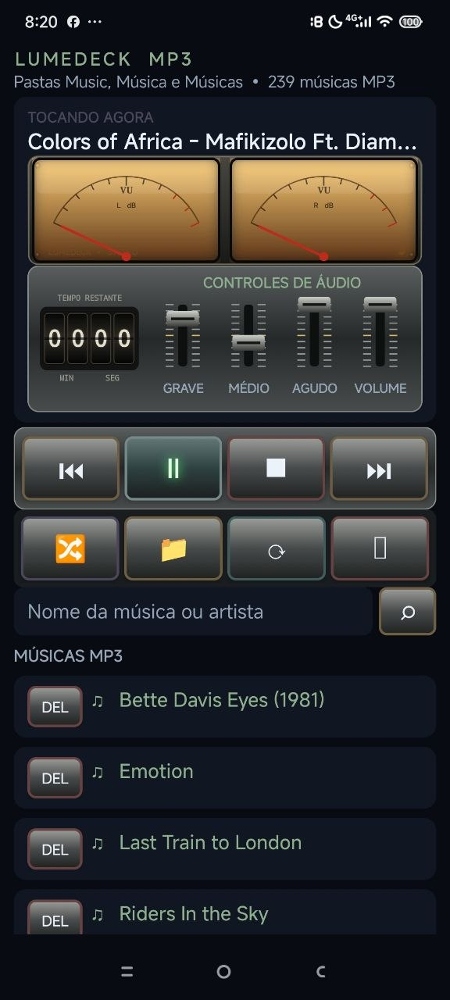

Ajuste grave, médio, agudo e volume enquanto acompanha os medidores VU estéreo.

MUNDO PRÁTICO APRESENTA
LUMEDECK MP3 PARA ANDROID
Sua coleção de MP3 em um player direto, elegante e inspirado nos equipamentos de áudio clássicos. Escolha uma pasta e ouça sem depender de internet.
Baixar APK do LumeDeck LumeDeck-MP3-v3.4.23.apk · 45 KBUm toca-discos digital para seus arquivos MP3
Procure músicas por nome ou artista, escolha uma pasta e navegue pela lista no próprio aparelho.
Reproduza os MP3 armazenados no celular sem conta, assinatura ou conexão com a internet.
Teste gratuito: o APK oferece 7 dias para experimentar. Após esse período, a ativação permanente utiliza um código vinculado ao aparelho.
Leve o LumeDeck com você
Baixe o arquivo, abra a pasta Downloads do Android e autorize a instalação quando o sistema solicitar.
Baixar LumeDeck MP3